ST790 Advanced Computing Lab: Introduction to CVX
This is a work in progress
Contents
Initial Stuff
clean up workspace
clear; % change current directory (this needs to be done for file to work!!!!!!!!!!!!!) cd '/home/brg/Documents/GitHub/github.ncsu.edu/st790-2015spr/hw4/' % load data load('prostate') % define response y = lpsa; % extract number of observations n = size(y, 1); % combine predictors into data matrix, including intercept X = [ones(n, 1) lcavol lweight age lbph svi lcp gleason pgg45]; % extract number of columns p = size(X, 2);
Linear Programming Example: regression (least absolute deviations)
The first example is regression. As the name suggests, this is similar to the typical regression setup except that the norm is used for the loss function, so the objective function becomes
minimize 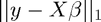
To solve this using a linear programming solver, we need to put it in the solver's standard form (which may differ slightly from the standard form Dr. Chi presented in class).
LP Example: Linprog
For MATLAB's lingprog function, we see that (from the online documentation or by the command "help linprog" in MATLAB) the problem's form is given by
minimize 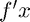
subject to 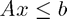, 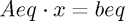, and 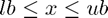.
Once we massage the problem into this form (I will do this on the board), then the corresponding function call is:
x = linprog(f, A, b, Aeq, beq, lb, ub, x0, options);
Not all of the inputs are required. For example, if we only have linear inequaltiy constraints, the function call becomes
x = linprog(f, A, b);
If some of the intermediate function inputs are not needed, they need to be replaced by two square brackets, []. So if we had linear equality constraints but no linear inequality constraints, the code is
x = linprog(f, [], [], Aeq, beq);
Anyway, after massaging the regression problem into this form, we can translate it to the code:
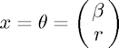
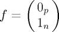
f = [zeros(p, 1); ones(n, 1)];

A = [X -speye(n); -X -speye(n)];
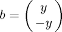
b = [y; -y];
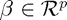, and 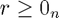
lb = [-inf(p, 1); zeros(n, 1)];
Now that all of the inputs are set, we can call lingprog to estimate the parameters, then extract the first 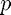 parameters as those correspond to 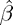.
tic; % start timer thetaHatLP = linprog(f, A, b, [], [], []); % estimate parameters toc; % run time betaHatLP = thetaHatLP(1:p); % extract estimates for beta
Optimization terminated. Elapsed time is 0.105838 seconds.
LP Example: Gurobi
Please note that this requires a standalone installation of Gurobi, which is free for academic users but was not required for this lab. However, I do encourage the knowleddge of a commercial solver such as Gurobi or MOSEK (both of which are free for academic users, follow the links) as those are state-of-the-art solvers and more efficient than MATLAB's built-in solvers and the R equivalents that I'm aware of (both Gurobi and MOSEK are available in R).
As before, the first thing we need to do is become familiar with what the standard form looks like according to the solver. A quick view of this is available through Gurobi's online documentation, while the details are available in the actual reference manual (p. 433). The relevant parts for our purposes are
minimize 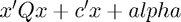
subject to 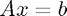 and 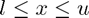.
and the function call is
gurobi(model, params)
For Gurobi, the model argument is pieced together in a struct variable (which is essentially like a list in R) that contains different fields that correspond to the various parts of the optimization poblem. The field of a struct is referenced with a period, so the syntax is struct.field.
Here are a few notes on constructing the model, as the implementation is not as straightforward as linprog:
- 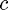 is required (so a vector of zeros is used if it is not needed), and obj is its corresponding field (model.obj)
- is also required, and it must be a sparse matrix (using the sparse function). Even if you do not have any constraints in your model, is still required and has to be sparse (so simply using [] doesn't work). As we will see in the lasso example, I usually use sparse(zeros(0, p));, where is the dimension of the parameter vector/optimization variable, to create a sparse empty matrix.
- Linear inequality constraints are also possible, even though the standard form only has linear equality constraints. The sense field specifies the type of constraint, using either '=', '<', or '>'. A single value can be used when all of the constraints are the same, otherwise for mixed constraints there needs to be one value per row of . Since A is required, sense is also required.
- The field for 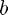 is rhs. This is also required.
- The field for 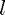 is lb. This is optional, but please note that the default lower bound is zero, and not 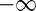, which can be accomplished by using -inf(p, 1).
- params is optional and can be used to specify options. A list of options is available on page 487 of the reference manual. I typically only set the field OutputFlag to to suppress the output.
- x is the field in the output struct that has the solution. The solution includes several other output fields, detailed on p. 436 of the referencec manual.
Now that we have some background on gurobi, we can see it in action:
%# Model Setup #% % linear coefficients gmodel.obj = [zeros(p, 1); ones(n, 1)]; % constraint matrix gmodel.A = [X -speye(n); -X -speye(n)]; % constraint type. Only one value needed since all constraints are inequality gmodel.sense = '<'; % b vector for constraints gmodel.rhs = [y; -y]; % lower bound (needed because default is zero) gmodel.lb = [-inf(p, 1); zeros(n, 1)]; % suppress output gparam.OutputFlag = 0; %# Model Estiation #% tic; % start timer gresult = gurobi(gmodel, gparam); % estimate model toc; % run time betaHatGurobiLP = gresult.x(1:p); % extract estimates for beta
Elapsed time is 0.003544 seconds.
LP Example: CVX
While Gurobi and MOSEK are solvers, CVX is a modeling tool which provides a much more user-friendly interface for solving optimization problems using a variety of solvers, saving the hassle of needing to massage the problem into standard form or the hassle of having to learn each solver's syntax.
I will get into the details of CVX later, but for now, let's look at how we would solve the regression problem using CVX.
%# Model Estiation #% tic; % start timer cvx_begin quiet % initiate CVX, hiding output variable betaHatCVX_LP(p); % declare optimization variable minimize(norm(y - X*betaHatCVX_LP, 1)); % define objective function cvx_end % declare end of CVX statements toc; % run time
As you can see, the syntax is much more straightforward and succinct, and essentially translates the original form of the problem directly to code without first having to massage it into an intermediate form for the sake of estimation. Here
%# Compare estimates #% % reduce the number of decimals displayed format short % display estimates display([betaHatLP betaHatCVX_LP betaHatGurobiLP])
Elapsed time is 0.057000 seconds.
ans =
-0.5722 -0.5722 -0.5722
0.5249 0.5249 0.5249
0.6711 0.6711 0.6711
-0.0283 -0.0283 -0.0283
0.1598 0.1598 0.1598
0.8119 0.8119 0.8119
-0.1091 -0.1091 -0.1091
0.2011 0.2011 0.2011
0.0029 0.0029 0.0029